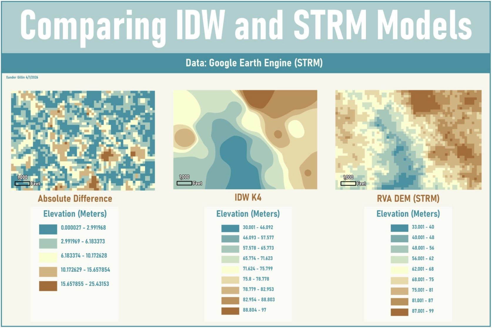
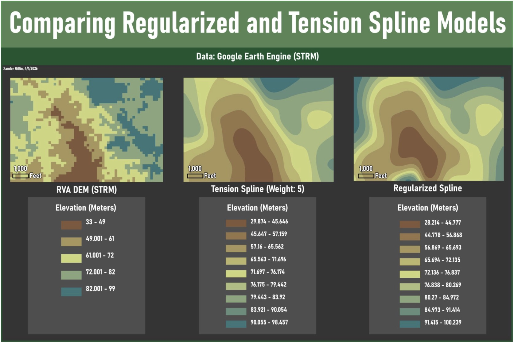
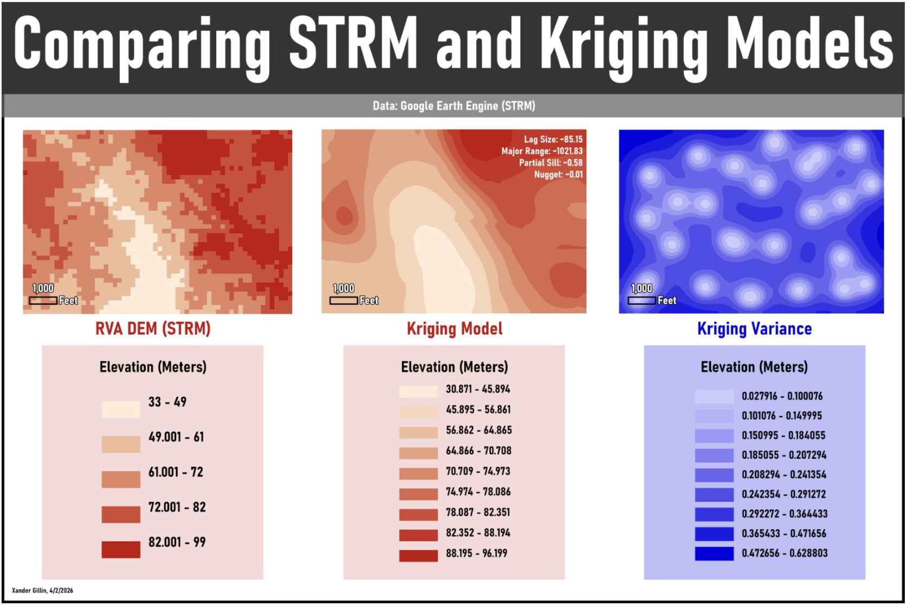
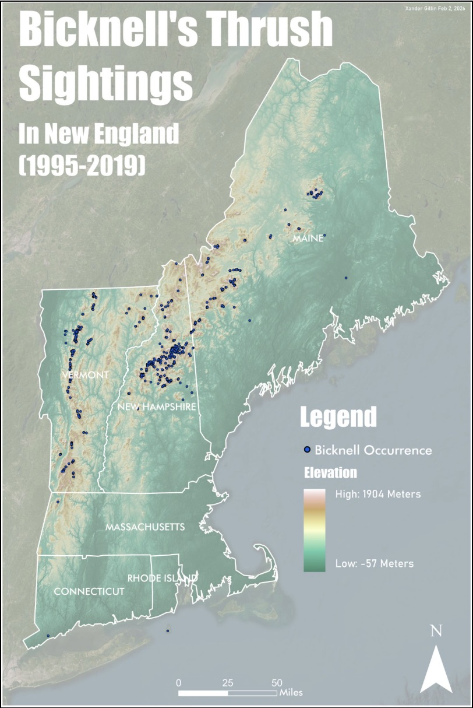
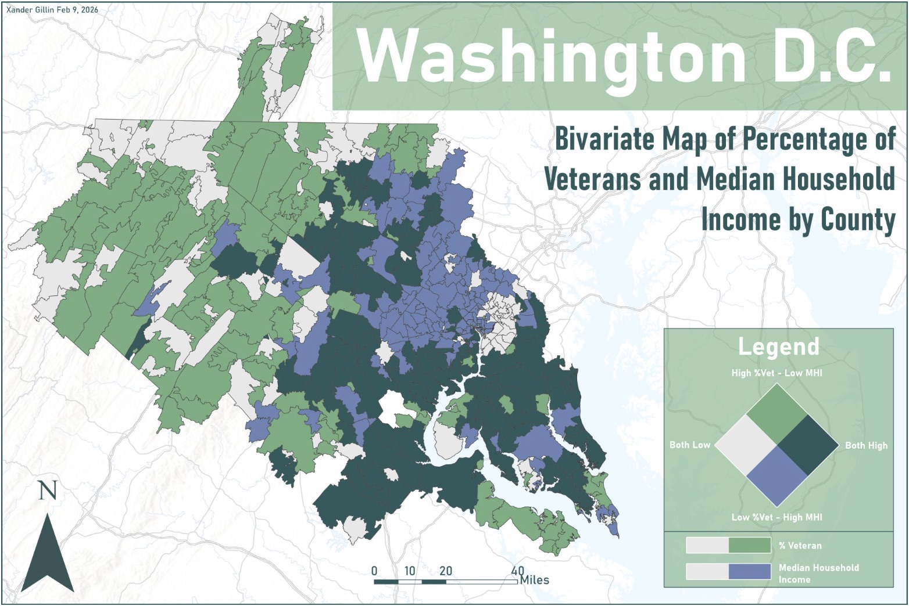
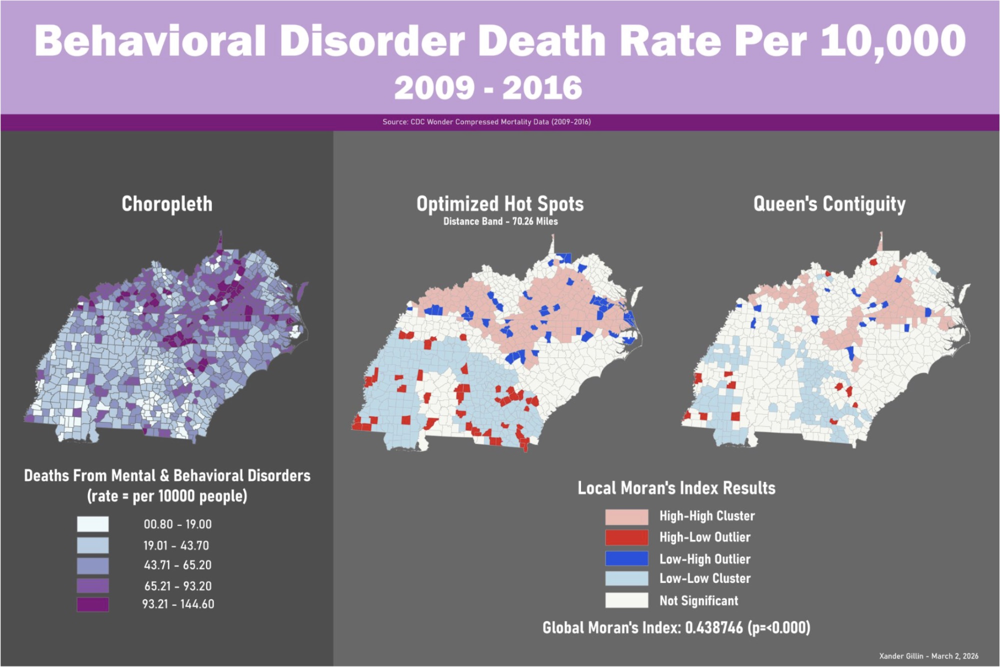
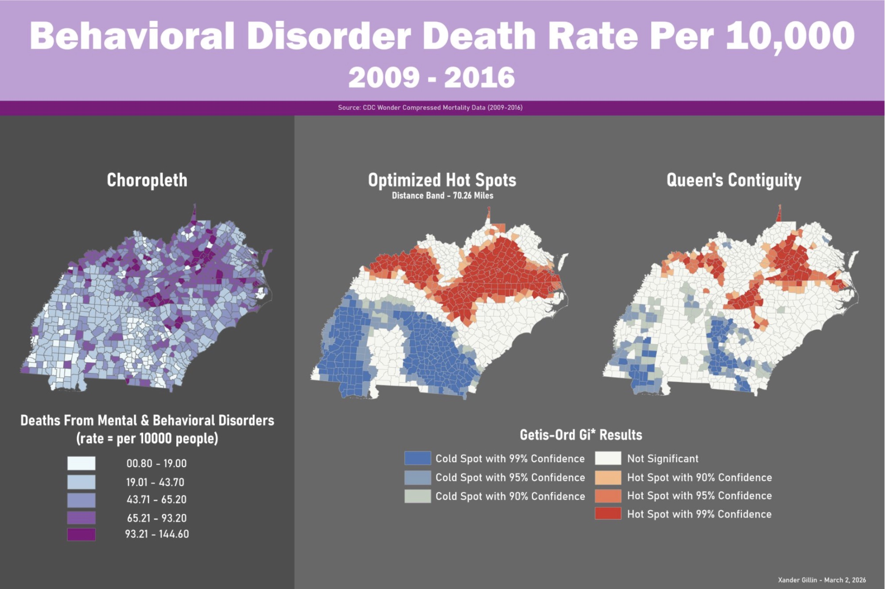

01 / 07
Where the Crashes Cluster
This map uses spatial analysis to examine the geographic distribution of traffic crashes and identify areas where crash incidents are concentrated.
GIS · Spatial Analysis · 2026
Catalogue
A collection of analytical maps showcasing my work in GIS, spatial analysis, and geographic visualization. These maps explore patterns, relationships, and change across different places and datasets, with an emphasis on using maps to communicate meaningful spatial stories.

01 / 07
This map uses spatial analysis to examine the geographic distribution of traffic crashes and identify areas where crash incidents are concentrated.
GIS · Spatial Analysis · 2026

02 / 07
This map examines a geographic pattern using spatial analysis and visualization techniques to identify relationships within the study area.
GIS · Spatial Analysis · 2026

03 / 07
This visualization explores spatial relationships across the study area, using geographic data to investigate patterns that may not be immediately visible in the underlying dataset.
GIS · Geographic Visualization · 2026

04 / 07
This map investigates geographic change and variation across space, emphasizing the use of cartographic visualization as a tool for communicating research findings.
GIS · Spatial Analysis · 2026

05 / 07
This map investigates geographic change and variation across space, emphasizing the use of cartographic visualization as a tool for communicating research findings.
GIS · Spatial Analysis · 2026

06 / 07
This map investigates geographic change and variation across space, emphasizing the use of cartographic visualization as a tool for communicating research findings.
GIS · Spatial Analysis · 2026

07 / 07
This map investigates geographic change and variation across space, emphasizing the use of cartographic visualization as a tool for communicating research findings.
GIS · Spatial Analysis · 2026